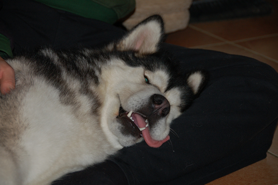
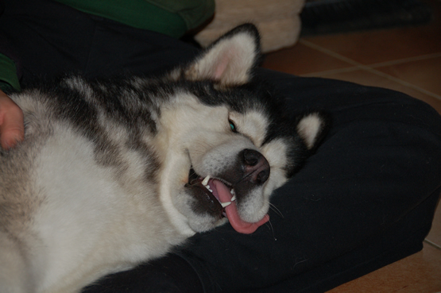

|
Alaskan Malamute's Exercise |  |
|
Alaskan Malamute's Exercise |  |
As a large dog with a lot of energy, the Alaskan Malamute requires a great deal of exercise. The Kennel Club recommends over two hours of exercise a day, noting these are not dogs for lazy people.